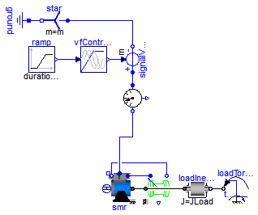
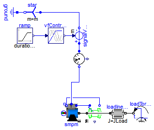
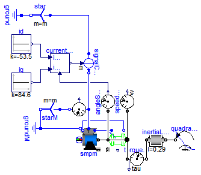
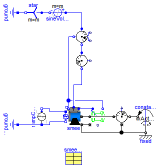
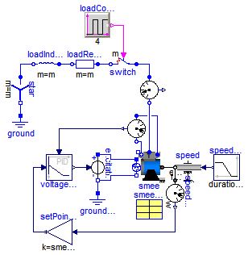

Extends from Modelica.Icons.ExamplesPackage (Icon for packages containing runnable examples).
| Name | Description |
|---|---|
| Test example: SynchronousInductionMachineReluctanceRotor with inverter | |
| Test example: PermanentMagnetSynchronousInductionMachine with inverter | |
| Test example: PermanentMagnetSynchronousInductionMachine fed by current source | |
| Test example: ElectricalExcitedSynchronousInductionMachine as Generator | |
| Test example: ElectricalExcitedSynchronousInductionMachine with voltage controller |
 Modelica.Electrical.Machines.Examples.SynchronousInductionMachines.SMR_Inverter
Modelica.Electrical.Machines.Examples.SynchronousInductionMachines.SMR_Inverter
Extends from Modelica.Icons.Example (Icon for runnable examples).
| Type | Name | Default | Description |
|---|---|---|---|
| Voltage | VNominal | 100 | Nominal RMS voltage per phase [V] |
| Frequency | fNominal | 50 | Nominal frequency [Hz] |
| Frequency | f | 50 | Actual frequency [Hz] |
| Time | tRamp | 1 | Frequency ramp [s] |
| Torque | TLoad | 46 | Nominal load torque [N.m] |
| Time | tStep | 1.2 | Time of load torque step [s] |
| Inertia | JLoad | 0.29 | Load's moment of inertia [kg.m2] |
model SMR_Inverter
"Test example: SynchronousInductionMachineReluctanceRotor with inverter"
extends Modelica.Icons.Example;
constant Integer m=3 "Number of phases";
parameter Modelica.SIunits.Voltage VNominal=100
"Nominal RMS voltage per phase";
parameter Modelica.SIunits.Frequency fNominal=50 "Nominal frequency";
parameter Modelica.SIunits.Frequency f=50 "Actual frequency";
parameter Modelica.SIunits.Time tRamp=1 "Frequency ramp";
parameter Modelica.SIunits.Torque TLoad=46 "Nominal load torque";
parameter Modelica.SIunits.Time tStep=1.2 "Time of load torque step";
parameter Modelica.SIunits.Inertia JLoad=0.29 "Load's moment of inertia";
Machines.BasicMachines.SynchronousInductionMachines.SM_ReluctanceRotor
smr;
Machines.Sensors.CurrentQuasiRMSSensor currentQuasiRMSSensor;
Machines.Sensors.RotorDisplacementAngle rotorDisplacementAngle(p=smr.p);
Modelica.Blocks.Sources.Ramp ramp(height=f, duration=tRamp);
Machines.Utilities.VfController vfController(
final m=m,
VNominal=VNominal,
fNominal=fNominal);
Modelica.Electrical.MultiPhase.Sources.SignalVoltage signalVoltage(final m=
m);
Modelica.Electrical.MultiPhase.Basic.Star star(final m=m);
Modelica.Electrical.Analog.Basic.Ground ground;
Modelica.Mechanics.Rotational.Components.Inertia loadInertia(
J=JLoad);
Modelica.Mechanics.Rotational.Sources.TorqueStep loadTorqueStep(
startTime=tStep,
stepTorque=-TLoad,
useSupport=false);
Machines.Utilities.TerminalBox terminalBox(terminalConnection="Y");
equation
connect(signalVoltage.plug_n, star.plug_p);
connect(star.pin_n, ground.p);
connect(ramp.y, vfController.u);
connect(vfController.y, signalVoltage.v);
connect(loadInertia.flange_b, loadTorqueStep.flange);
connect(currentQuasiRMSSensor.plug_p, signalVoltage.plug_p);
connect(smr.plug_sn, rotorDisplacementAngle.plug_n);
connect(smr.plug_sp, rotorDisplacementAngle.plug_p);
connect(terminalBox.plugSupply, currentQuasiRMSSensor.plug_n);
connect(terminalBox.plug_sp, smr.plug_sp);
connect(terminalBox.plug_sn, smr.plug_sn);
connect(smr.flange, rotorDisplacementAngle.flange);
connect(smr.flange, loadInertia.flange_a);
end SMR_Inverter;
Modelica.Electrical.Machines.Examples.SynchronousInductionMachines.SMPM_Inverter
In practice it is nearly impossible to drive a PMSMD without current controller.
Extends from Modelica.Icons.Example (Icon for runnable examples).
| Type | Name | Default | Description |
|---|---|---|---|
| Voltage | VNominal | 100 | Nominal RMS voltage per phase [V] |
| Frequency | fNominal | 50 | Nominal frequency [Hz] |
| Frequency | f | 50 | Actual frequency [Hz] |
| Time | tRamp | 1 | Frequency ramp [s] |
| Torque | TLoad | 181.4 | Nominal load torque [N.m] |
| Time | tStep | 1.2 | Time of load torque step [s] |
| Inertia | JLoad | 0.29 | Load's moment of inertia [kg.m2] |
model SMPM_Inverter
"Test example: PermanentMagnetSynchronousInductionMachine with inverter"
extends Modelica.Icons.Example;
constant Integer m=3 "Number of phases";
parameter Modelica.SIunits.Voltage VNominal=100
"Nominal RMS voltage per phase";
parameter Modelica.SIunits.Frequency fNominal=50 "Nominal frequency";
parameter Modelica.SIunits.Frequency f=50 "Actual frequency";
parameter Modelica.SIunits.Time tRamp=1 "Frequency ramp";
parameter Modelica.SIunits.Torque TLoad=181.4 "Nominal load torque";
parameter Modelica.SIunits.Time tStep=1.2 "Time of load torque step";
parameter Modelica.SIunits.Inertia JLoad=0.29 "Load's moment of inertia";
Machines.BasicMachines.SynchronousInductionMachines.SM_PermanentMagnet
smpm;
Machines.Sensors.CurrentQuasiRMSSensor currentQuasiRMSSensor;
Machines.Sensors.RotorDisplacementAngle rotorDisplacementAngle(p=smpm.p);
Modelica.Blocks.Sources.Ramp ramp(height=f, duration=tRamp);
Machines.Utilities.VfController vfController(
final m=m,
VNominal=VNominal,
fNominal=fNominal,
BasePhase=+Modelica.Constants.pi/2);
Modelica.Electrical.MultiPhase.Sources.SignalVoltage signalVoltage(final m=
m);
Modelica.Electrical.MultiPhase.Basic.Star star(final m=m);
Modelica.Electrical.Analog.Basic.Ground ground;
Modelica.Mechanics.Rotational.Components.Inertia loadInertia(
J=JLoad);
Modelica.Mechanics.Rotational.Sources.TorqueStep loadTorqueStep(
startTime=tStep,
stepTorque=-TLoad,
useSupport=false);
Machines.Utilities.TerminalBox terminalBox(terminalConnection="Y");
equation
connect(signalVoltage.plug_n, star.plug_p);
connect(star.pin_n, ground.p);
connect(ramp.y, vfController.u);
connect(vfController.y, signalVoltage.v);
connect(loadInertia.flange_b, loadTorqueStep.flange);
connect(signalVoltage.plug_p, currentQuasiRMSSensor.plug_p);
connect(rotorDisplacementAngle.plug_n, smpm.plug_sn);
connect(rotorDisplacementAngle.plug_p, smpm.plug_sp);
connect(terminalBox.plugSupply, currentQuasiRMSSensor.plug_n);
connect(terminalBox.plug_sn, smpm.plug_sn);
connect(terminalBox.plug_sp, smpm.plug_sp);
connect(smpm.flange, rotorDisplacementAngle.flange);
connect(smpm.flange, loadInertia.flange_a);
end SMPM_Inverter;
Modelica.Electrical.Machines.Examples.SynchronousInductionMachines.SMPM_CurrentSource
Extends from Modelica.Icons.Example (Icon for runnable examples).
| Type | Name | Default | Description |
|---|---|---|---|
| Voltage | VNominal | 100 | Nominal RMS voltage per phase [V] |
| Frequency | fNominal | 50 | Nominal frequency [Hz] |
| Frequency | f | 50 | Actual frequency [Hz] |
| Time | tRamp | 1 | Frequency ramp [s] |
| Torque | TLoad | 181.4 | Nominal load torque [N.m] |
| Time | tStep | 1.2 | Time of load torque step [s] |
| Inertia | JLoad | 0.29 | Load's moment of inertia [kg.m2] |
model SMPM_CurrentSource
"Test example: PermanentMagnetSynchronousInductionMachine fed by current source"
extends Modelica.Icons.Example;
constant Integer m=3 "Number of phases";
parameter Modelica.SIunits.Voltage VNominal=100
"Nominal RMS voltage per phase";
parameter Modelica.SIunits.Frequency fNominal=50 "Nominal frequency";
parameter Modelica.SIunits.Frequency f=50 "Actual frequency";
parameter Modelica.SIunits.Time tRamp=1 "Frequency ramp";
parameter Modelica.SIunits.Torque TLoad=181.4 "Nominal load torque";
parameter Modelica.SIunits.Time tStep=1.2 "Time of load torque step";
parameter Modelica.SIunits.Inertia JLoad=0.29 "Load's moment of inertia";
Machines.BasicMachines.SynchronousInductionMachines.SM_PermanentMagnet smpm(
useDamperCage=false);
MultiPhase.Sources.SignalCurrent signalCurrent(final m=m);
Modelica.Electrical.MultiPhase.Basic.Star star(final m=m);
Modelica.Electrical.Analog.Basic.Ground ground;
Utilities.CurrentController currentController(p=smpm.p);
Blocks.Sources.Constant iq(k=84.6);
Blocks.Sources.Constant id(k=-53.5);
Sensors.VoltageQuasiRMSSensor voltageQuasiRMSSensor;
MultiPhase.Basic.Star starM(final m=m);
Modelica.Electrical.Analog.Basic.Ground groundM;
Machines.Utilities.TerminalBox terminalBox(terminalConnection="Y");
Machines.Sensors.RotorDisplacementAngle rotorDisplacementAngle(p=smpm.p);
Mechanics.Rotational.Sensors.AngleSensor angleSensor;
Mechanics.Rotational.Sensors.TorqueSensor torqueSensor;
Mechanics.Rotational.Sensors.SpeedSensor speedSensor;
Mechanics.Rotational.Components.Inertia inertiaLoad(J=0.29);
Mechanics.Rotational.Sources.QuadraticSpeedDependentTorque
quadraticSpeedDependentTorque(tau_nominal=-181.4, w_nominal(displayUnit="rpm")=
157.07963267949);
equation
connect(star.pin_n, ground.p);
connect(rotorDisplacementAngle.plug_n, smpm.plug_sn);
connect(rotorDisplacementAngle.plug_p, smpm.plug_sp);
connect(terminalBox.plug_sn, smpm.plug_sn);
connect(terminalBox.plug_sp, smpm.plug_sp);
connect(smpm.flange, rotorDisplacementAngle.flange);
connect(signalCurrent.plug_p, star.plug_p);
connect(angleSensor.flange, rotorDisplacementAngle.flange);
connect(angleSensor.phi, currentController.phi);
connect(signalCurrent.plug_n, terminalBox.plugSupply);
connect(id.y, currentController.id_rms);
connect(iq.y, currentController.iq_rms);
connect(groundM.p, terminalBox.starpoint);
connect(smpm.flange, torqueSensor.flange_a);
connect(voltageQuasiRMSSensor.plug_p, terminalBox.plugSupply);
connect(starM.plug_p, voltageQuasiRMSSensor.plug_n);
connect(starM.pin_n, groundM.p);
connect(currentController.y, signalCurrent.i);
connect(speedSensor.flange, smpm.flange);
connect(quadraticSpeedDependentTorque.flange, inertiaLoad.flange_b);
connect(torqueSensor.flange_b, inertiaLoad.flange_a);
end SMPM_CurrentSource;
Modelica.Electrical.Machines.Examples.SynchronousInductionMachines.SMEE_Generator
Extends from Modelica.Icons.Example (Icon for runnable examples).
| Type | Name | Default | Description |
|---|---|---|---|
| Voltage | VNominal | 100 | Nominal RMS voltage per phase [V] |
| Frequency | fNominal | 50 | Nominal frequency [Hz] |
| AngularVelocity | wActual | 1499*2*Modelica.Constants.pi... | Actual speed [rad/s] |
| Current | Ie | 19 | Excitation current [A] |
| Current | Ie0 | 10 | Initial excitation current [A] |
| Angle | gamma0 | 0 | Initial rotor displacement angle [rad] |
| SynchronousMachineData | smeeData |
model SMEE_Generator
"Test example: ElectricalExcitedSynchronousInductionMachine as Generator"
extends Modelica.Icons.Example;
constant Integer m=3 "Number of phases";
parameter Modelica.SIunits.Voltage VNominal=100
"Nominal RMS voltage per phase";
parameter Modelica.SIunits.Frequency fNominal=50 "Nominal frequency";
parameter Modelica.SIunits.AngularVelocity wActual(displayUnit="1/min")=1499*2*Modelica.Constants.pi/60
"Actual speed";
parameter Modelica.SIunits.Current Ie = 19 "Excitation current";
parameter Modelica.SIunits.Current Ie0 = 10 "Initial excitation current";
parameter Modelica.SIunits.Angle gamma0(displayUnit="deg")=0
"Initial rotor displacement angle";
Machines.BasicMachines.SynchronousInductionMachines.SM_ElectricalExcited
smee(
useSupport=true, phiMechanical(start=-(Modelica.Constants.pi +gamma0)/smee.p, fixed=true),
fsNominal=smeeData.fsNominal,
Rs=smeeData.Rs,
TsRef=smeeData.TsRef,
alpha20s=smeeData.alpha20s,
Lssigma=smeeData.Lssigma,
Lmd=smeeData.Lmd,
Lmq=smeeData.Lmq,
Lrsigmad=smeeData.Lrsigmad,
Lrsigmaq=smeeData.Lrsigmaq,
Rrd=smeeData.Rrd,
Rrq=smeeData.Rrq,
TrRef=smeeData.TrRef,
alpha20r=smeeData.alpha20r,
VsNominal=smeeData.VsNominal,
IeOpenCircuit=smeeData.IeOpenCircuit,
Re=smeeData.Re,
TeRef=smeeData.TeRef,
alpha20e=smeeData.alpha20e,
sigmae=smeeData.sigmae);
Machines.Sensors.RotorDisplacementAngle rotorDisplacementAngle(p=smee.p,
useSupport=true);
Modelica.Electrical.Analog.Basic.Ground groundExcitation;
Modelica.Mechanics.Rotational.Sources.ConstantSpeed constantSpeed(
final w_fixed=wActual);
Machines.Sensors.MechanicalPowerSensor mechanicalPowerSensor(useSupport=true);
Machines.Sensors.ElectricalPowerSensor electricalPowerSensor;
Machines.Sensors.CurrentQuasiRMSSensor currentQuasiRMSSensor;
Modelica.Electrical.MultiPhase.Sources.SineVoltage sineVoltage(
final m=m,
final V=fill(VNominal*sqrt(2), m),
final freqHz=fill(fNominal, m));
Modelica.Electrical.MultiPhase.Basic.Star star(final m=m);
Modelica.Electrical.Analog.Basic.Ground ground;
Modelica.Electrical.Analog.Sources.RampCurrent rampCurrent(
duration=0.1,
I=Ie - Ie0,
offset=Ie0);
Machines.Utilities.TerminalBox terminalBox(terminalConnection="Y");
Modelica.Mechanics.Rotational.Components.Fixed fixed;
parameter Machines.Utilities.SynchronousMachineData smeeData;
equation
connect(rotorDisplacementAngle.plug_n, smee.plug_sn);
connect(rotorDisplacementAngle.plug_p, smee.plug_sp);
connect(star.pin_n, ground.p);
connect(star.plug_p, sineVoltage.plug_n);
connect(electricalPowerSensor.plug_ni, currentQuasiRMSSensor.plug_p);
connect(mechanicalPowerSensor.flange_b, constantSpeed.flange);
connect(sineVoltage.plug_p, electricalPowerSensor.plug_p);
connect(rampCurrent.p, groundExcitation.p);
connect(rampCurrent.p, smee.pin_en);
connect(rampCurrent.n, smee.pin_ep);
connect(electricalPowerSensor.plug_nv, smee.plug_sn);
connect(terminalBox.plugSupply, currentQuasiRMSSensor.plug_n);
connect(terminalBox.plug_sn, smee.plug_sn);
connect(terminalBox.plug_sp, smee.plug_sp);
connect(constantSpeed.support, fixed.flange);
connect(mechanicalPowerSensor.support, fixed.flange);
connect(smee.support, fixed.flange);
connect(rotorDisplacementAngle.support, smee.support);
connect(smee.flange, rotorDisplacementAngle.flange);
connect(smee.flange, mechanicalPowerSensor.flange_a);
end SMEE_Generator;
Modelica.Electrical.Machines.Examples.SynchronousInductionMachines.SMEE_LoadDump
Extends from Modelica.Icons.Example (Icon for runnable examples).
| Type | Name | Default | Description |
|---|---|---|---|
| AngularVelocity | wNominal | 2*pi*smeeData.fsNominal/smee.p | Nominal speed [rad/s] |
| Impedance | ZNominal | 3*smeeData.VsNominal^2/smeeD... | Nominal load impedance [Ohm] |
| Real | powerFactor | 0.8 | Load power factor |
| Resistance | RLoad | ZNominal*powerFactor | Load resistance [Ohm] |
| Inductance | LLoad | ZNominal*sqrt(1 - powerFacto... | Load inductance [H] |
| Voltage | Ve0 | smee.IeOpenCircuit*Machines.... | No load excitation voltage [V] |
| Real | k | 2*Ve0/smeeData.VsNominal | Voltage controller: gain |
| Time | Ti | smeeData.Td0Transient/2 | Voltage controller: integral time constant [s] |
| SynchronousMachineData | smeeData |
model SMEE_LoadDump
"Test example: ElectricalExcitedSynchronousInductionMachine with voltage controller"
extends Modelica.Icons.Example;
import Modelica.Constants.pi;
constant Integer m=3 "Number of phases";
parameter Modelica.SIunits.AngularVelocity wNominal=2*pi*smeeData.fsNominal/smee.p
"Nominal speed";
parameter Modelica.SIunits.Impedance ZNominal=3*smeeData.VsNominal^2/smeeData.SNominal
"Nominal load impedance";
parameter Real powerFactor(min=0, max=1)=0.8 "Load power factor";
parameter Modelica.SIunits.Resistance RLoad=ZNominal*powerFactor
"Load resistance";
parameter Modelica.SIunits.Inductance LLoad=ZNominal*sqrt(1-powerFactor^2)/(2*pi*smeeData.fsNominal)
"Load inductance";
parameter Modelica.SIunits.Voltage Ve0=smee.IeOpenCircuit*
Machines.Thermal.convertResistance(smee.Re, smee.TeRef, smee.alpha20e, smee.TeOperational)
"No load excitation voltage";
parameter Real k=2*Ve0/smeeData.VsNominal "Voltage controller: gain";
parameter Modelica.SIunits.Time Ti=smeeData.Td0Transient/2
"Voltage controller: integral time constant";
output Real controlError=(setPointGain.y - voltageQuasiRMSSensor.V)/smeeData.VsNominal;
Machines.BasicMachines.SynchronousInductionMachines.SM_ElectricalExcited
smee(
fsNominal=smeeData.fsNominal,
Rs=smeeData.Rs,
TsRef=smeeData.TsRef,
Lssigma=smeeData.Lssigma,
Lmd=smeeData.Lmd,
Lmq=smeeData.Lmq,
Lrsigmad=smeeData.Lrsigmad,
Lrsigmaq=smeeData.Lrsigmaq,
Rrd=smeeData.Rrd,
Rrq=smeeData.Rrq,
TrRef=smeeData.TrRef,
VsNominal=smeeData.VsNominal,
IeOpenCircuit=smeeData.IeOpenCircuit,
Re=smeeData.Re,
TeRef=smeeData.TeRef,
sigmae=smeeData.sigmae,
alpha20s=smeeData.alpha20s,
useDamperCage=true,
alpha20r=smeeData.alpha20r,
alpha20e=smeeData.alpha20e);
parameter Machines.Utilities.SynchronousMachineData smeeData;
Machines.Utilities.TerminalBox terminalBox(terminalConnection="Y");
Modelica.Electrical.Analog.Basic.Ground ground;
Modelica.Mechanics.Rotational.Sources.Speed speed;
Modelica.Blocks.Sources.Ramp speedRamp(height=wNominal, duration=1);
Modelica.Mechanics.Rotational.Sensors.SpeedSensor speedSensor;
Modelica.Blocks.Math.Gain setPointGain(k=smeeData.VsNominal/wNominal);
Machines.Sensors.VoltageQuasiRMSSensor voltageQuasiRMSSensor(
ToSpacePhasor1(y(each start=1E-3, each fixed=true)));
Modelica.Blocks.Continuous.LimPID voltageController(
controllerType=Modelica.Blocks.Types.SimpleController.PI,
k=k,
Ti=Ti,
yMax=2.5*Ve0,
yMin=0);
Modelica.Electrical.Analog.Sources.SignalVoltage excitationVoltage;
Modelica.Electrical.Analog.Basic.Ground groundExcitation;
Machines.Sensors.CurrentQuasiRMSSensor currentQuasiRMSSensor;
Modelica.Blocks.Sources.BooleanPulse loadControl(period=4, startTime=2);
Modelica.Electrical.MultiPhase.Ideal.CloserWithArc switch( m=m);
Modelica.Electrical.MultiPhase.Basic.Resistor loadResistor(m=m, R=fill(RLoad, m));
Modelica.Electrical.MultiPhase.Basic.Inductor loadInductor(m=m, L=fill(LLoad, m));
Modelica.Electrical.MultiPhase.Basic.Star star(m=m);
equation
connect(terminalBox.plug_sn, smee.plug_sn);
connect(terminalBox.plug_sp, smee.plug_sp);
connect(excitationVoltage.p, smee.pin_ep);
connect(excitationVoltage.n, smee.pin_en);
connect(excitationVoltage.n, groundExcitation.p);
connect(voltageQuasiRMSSensor.plug_n, smee.plug_sn);
connect(voltageQuasiRMSSensor.plug_p, smee.plug_sp);
connect(terminalBox.plugSupply, currentQuasiRMSSensor.plug_n);
connect(smee.flange, speed.flange);
connect(speed.flange, speedSensor.flange);
connect(speedRamp.y, speed.w_ref);
connect(setPointGain.y, voltageController.u_s);
connect(speedSensor.w, setPointGain.u);
connect(voltageQuasiRMSSensor.V, voltageController.u_m);
connect(voltageController.y, excitationVoltage.v);
connect(loadInductor.plug_p, loadResistor.plug_n);
connect(loadResistor.plug_p, switch.plug_n);
connect(switch.plug_p, currentQuasiRMSSensor.plug_p);
connect(star.plug_p, loadInductor.plug_n);
connect(loadControl.y, switch.control[1]);
connect(loadControl.y, switch.control[2]);
connect(loadControl.y, switch.control[3]);
connect(star.pin_n, ground.p);
end SMEE_LoadDump;